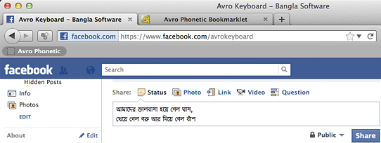

Avro Phonetic bookmarklet is a handy way to type Bangla on any webpage, even when Avro Keyboard is not installed in your system or the webpage doesn't provide any way for Bangla typing.

Installing the bookmarklet:
Make sure your browser's bookmark toolbar is visible.
Just drag the following button to your Bookmarks Toolbar.